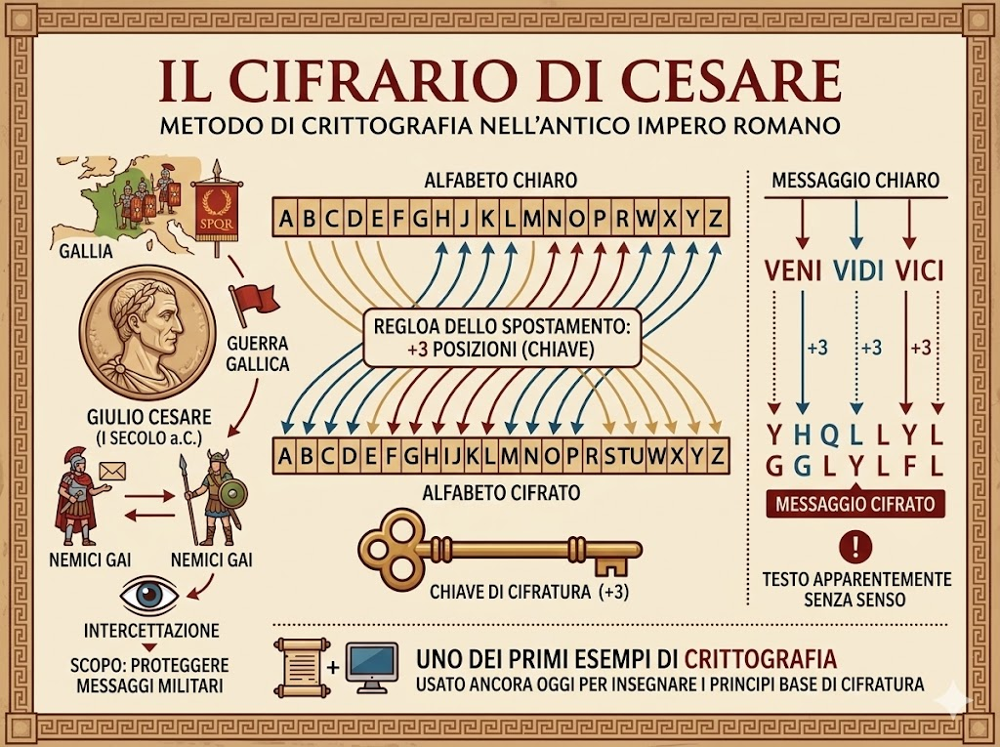
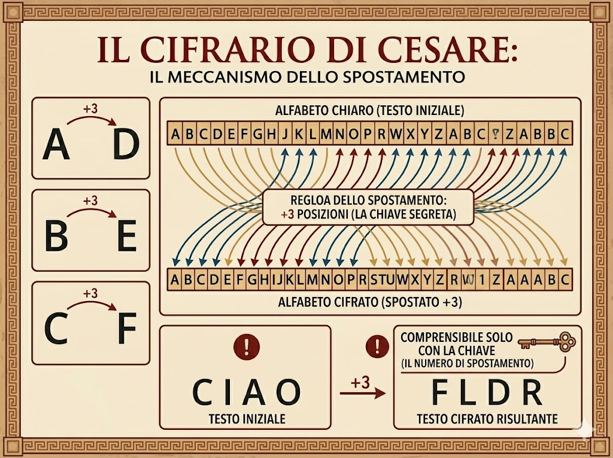
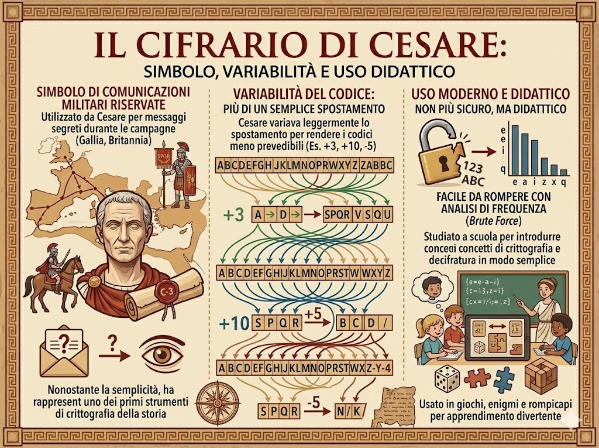

Il Cifrario di Cesare è un metodo di crittografia molto semplice usato nell’antico Impero Romano per proteggere i messaggi militari. Prende il nome da Giulio Cesare, che nel I secolo a.C. lo utilizzava per comunicare con i suoi generali durante le campagne militari, in particolare durante la Guerra Gallica. L’obiettivo era impedire ai nemici di capire il contenuto dei messaggi nel caso fossero intercettati. Il sistema consisteva nel sostituire ogni lettera del messaggio con un’altra lettera dell’alfabeto spostata di alcune posizioni, creando così un testo apparentemente senza senso per chi non conosceva la regola dello spostamento. Questo metodo è uno dei primi esempi di crittografia della storia ed è spesso usato ancora oggi per spiegare i principi base della cifratura dei messaggi.

Il cifrario di cesare funziona spostando ogni lettera del messaggio di un certo numero di posizioni nell’alfabeto. Per cifrare un testo si sceglie prima un numero di spostamento, ad esempio 3, e poi si sostituisce ogni lettera con quella che si trova tre posizioni più avanti nell’alfabeto. Per esempio la lettera a diventa d, la b diventa e e la c diventa f. Applicando questa regola a tutte le lettere del messaggio si ottiene un testo cifrato che può essere compreso solo da chi conosce il numero di spostamento utilizzato per la cifratura.

Una curiosità del cifrario di cesare è che, nonostante la sua semplicità, ha rappresentato uno dei primi strumenti di crittografia della storia e viene spesso citato come simbolo di messaggi segreti nell’antica Roma. È interessante notare che Cesare non usava solo un numero fisso di spostamento: a volte variava leggermente il codice per rendere i messaggi meno prevedibili. Oggi il cifrario non è più sicuro, ma viene ancora studiato a scuola e usato in giochi, enigmi e rompicapi per introdurre i concetti di cifratura e decifratura in modo semplice e divertente.
